01
리뷰 체험단
올리브영·무신사·쿠팡·네이버·G마켓 등 국내 오픈마켓 전반에서 빠르게 리뷰를 쌓아 신뢰도와 랭킹을 올립니다.
- 1일 100명 대량 모집, 소수 인원 일별 모집 모두 가능
- 전 리뷰 포토 리뷰, 리뷰 텍스트 시안 작성·공유
- 올리브영 카테고리 랭킹 1위 공략
Project Reference
국내 마케팅부터 한국 브랜드의 일본 진출·유통까지
직접 맡아 온 프로젝트와 성과를 한곳에 모았습니다.
Korea Marketing
한국 시장에서는 리뷰 체험단, 검색·메타광고, 인플루언서 마케팅으로 브랜드 신뢰도와 랭킹, 인지도를 함께 끌어올립니다.
| 브랜드 | 총 팔로워 | 총 좋아요 | 총 도달 | 도달당 비용 |
|---|---|---|---|---|
| plentyplant | 288,671 | 16,566 | 119,950 | 37원 |
| MUSINSA | 424,161 | 15,011 | 152,960 | 35원 |
| 서울특별시 | 198,112 | 13,430 | 90,152 | 14원 |
| Fitāmin | 357,200 | 10,458 | 137,766 | 275원 |
| 건강기능식품 | 10,237 | 399,143 | 117,815 | 23원 |
출처: 국내 마케팅 제안서 p.3~11 (수치는 원문 표기 그대로)
Creator Network
이름에 마우스를 올리거나 누르면 사진이 보입니다.
| 크리에이터 | 플랫폼 | 팔로워 | 분야 | 주 시청층 | 평균 조회수 | 최고 조회수 |
|---|---|---|---|---|---|---|
| 63.7만 | 운동·패션·뷰티 | 10~40대 | 600,000 | 13,610,000 | ||
| 27.8만 | 패션·뷰티·라이프 | 20~40대 | 300,000 | 2,569,000 | ||
| 2.2만 | 패션·라이프 | 20대 | 940,000 | 2,400,000 | ||
| 11만 | 패션·라이프·예능 | 10~30대 | 700,000 | 24,700,000 | ||
| 18.1만 | 패션·라이프 | 20~30대 | 70,000 | 6,159,000 | ||
| 4.5만 | 패션·라이프 | 10~30대 | 100,000 | 1,960,000 | ||
| TikTok | 510만 | 댄스·라이프·예능 | 10~30대 | 200,000 | 17,900,000 | |
| 11만 | 패션·뷰티·라이프 | 10~30대 | 50,000 | 4,700,000 | ||
| 7.3만 | 패션·뷰티·라이프 | 20~40대 | 20,000 | 4,650,000 | ||
| 1.2만 | 패션·라이프 | 20대 | 300,000 | 5,170,000 | ||
| 5.4만 | 뷰티·시술후기·라이프 | 20~40대 여성 | 200,000 | 2,950,000 | ||
| 6.1만 | 패션·라이프·댄스 | 20~30대 | 150,000 | 9,670,000 | ||
| 2.6만 | 뷰티·모델·라이프 | 20~30대 | 20,000 | 35,000 | ||
| 1.3만 | 배우·모델·라이프 | 20~30대 | 20,000 | 140,000 | ||
| 107.7만 | 뷰티·패션·모델 | 10~30대 | 150,000 | 18,190,000 | ||
| 20.3만 | 패션·라이프 | 10~30대 | 100,000 | 315,000 | ||
| 11.1만 | 패션·라이프·예능 | 10~30대 여성 | 150,000 | 6,150,000 | ||
| 7만 | 패션·라이프·쇼핑 | 10~30대 여성 | 100,000 | 1,750,000 | ||
| 3.9만 | 뷰티·패션·라이프 | 10~30대 여성 | 100,000 | 5,110,000 | ||
| 1.2만 | 뷰티·패션·라이프 | 10~30대 | 10,000 | 685,000 | ||
| 4.9만 | 뷰티·패션·라이프 | 10~30대 | 20,000 | 105,000 | ||
| 3.9만 | 댄스·뷰티·패션 | 10~30대 | 10,000 | 15,000 | ||
| 2만 | 푸드·패션·라이프 | 10~30대 | 10,000 | 25,000 | ||
| 4만 | 모델·패션·라이프 | 10~30대 | 30,000 | 55,000 | ||
| 2.1만 | 모델·패션·라이프 | 10~30대 | 10,000 | 25,000 | ||
| 24.8만 | 모델·패션·라이프 | 20~30대 | 100,000 | 3,726,000 | ||
| 4.1만 | 모델·패션 | 20~30대 | 50,000 | 126,000 | ||
| 10.7만 | 모델·패션·라이프 | 10~20대 여성 | 50,000 | 155,000 | ||
| 29.7만 | 모델·패션·라이프 | 10~30대 | 150,000 | 1,105,000 | ||
| 1.9만 | 패션·뷰티·라이프 | 10~30대 | 500,000 | 1,550,000 | ||
| 2.8만 | 패션·모델·라이프 | 20~30대 | 30,000 | 225,000 | ||
| 34.5만 | 패션·댄스·모델 | 10~30대 | 500,000 | 1,290,000 | ||
| 1.3만 | 패션·라이프·트렌드 | 10~20대 | 10,000 | 64,000 | ||
| TikTok | 2만 | 푸드·패션·라이프 | 10~20대 | 50,000 | 923,000 | |
| 4.6만 | 패션·트렌드·뷰티 | 10~30대 | 50,000 | 5,470,000 | ||
| 2.3만 | 패션·모델·라이프 | 10~30대 | 20,000 | 829,000 | ||
| TikTok | 490만 | 뷰티·모델·패션 | 20~30대 | 700,000 | 21,600,000 | |
| 132만 | 패션·리빙·라이프 | 20~30대 | 900,000 | 6,000,000 |
출처: 하이퍼즈 유니버스 크리에이터 소개서(25.10). 크리에이터 수와 국가 수는 소개서에 실린 프로필을 센 값입니다.
Highlights
Korea Marketing
01
올리브영·무신사·쿠팡·네이버·G마켓 등 국내 오픈마켓 전반에서 빠르게 리뷰를 쌓아 신뢰도와 랭킹을 올립니다.
02
특가·기획전 일정에 맞춰 체험단 구매를 한 번에 일으켜 특정 카테고리 1위를 노립니다.
03
정확한 타깃에게 브랜드를 알리고, 광고비가 새는 곳을 막아 전환을 높입니다.
04
브랜드에 맞는 인플루언서를 매칭해 신뢰도 높은 바이럴을 만듭니다.
About
AGON Corp.(아곤코퍼레이션)은 한국 브랜드가 일본 시장에 진출하는 전 과정을 맡는 회사입니다.
큐텐(Qoo10) 운영 대행이나 인플루언서 마케팅 같은 초기 마케팅부터, 돈키호테·가전 양판점 같은 대형 오프라인 유통 입점까지 한 팀에서 진행합니다.
일본 진출 대행사는 보통 한 영역에 집중합니다.
AGON의 위치: 중장기 마케팅 × 소규모~대규모 유통 올인원
브랜드의 일본 진입 단계부터 중장기 전략 수립, 대형 유통 채널 입점까지 일괄로 지원합니다. 실무는 10년차 일본인 마케터를 중심으로 시장조사·기획·집행을 맡는 형태입니다.
Scope of Work
상품 마스터 등록, 상세페이지 검수와 일본 약사법 검토, 키워드·SEO 최적화
경쟁사 분석, 옵션·재고·노출 모니터링, 큐텐 내 프로모션·기획전 대응, SNS 연계 콘텐츠
CS·리뷰 대응, 클레임·반품·교환 대응, 수출입·통관, 물류대행사 연동과 재고 관리
큐텐 MD 커뮤니케이션, 정기 미팅, 일본 트렌드·시장 정보 공유
Qoo10 입점·운영 / Review 캠페인(일본인 베스트 리뷰어 직접 컨택) / Instagram 공식 계정 운영·시딩 / Twitter 나노 인플루언서 마케팅
자체 DB로 5만 팔로워 이상~메가급 인플루언서 섭외, 인플루언서 콜라보 공동구매, 일본 블로그 마케팅(SEO), 유튜브 마케팅
일본 매거진·매체 PR(연예인 콜라보 연계), 현지 팝업스토어, K-POP 페스티벌 부스
Case Studies
각 사례는 성과를 먼저 보여 드리고, 배경과 한 일은 펼쳐서 볼 수 있습니다. 사진은 누르면 크게 볼 수 있습니다.
"일본은 오프라인 입점 매장이 늘면 온라인 매출도 같이 오르는 시장"이라는 걸 보여 준 사례입니다.
제모기 브랜드 JOVS의 일본 유통.
오프라인 매장 입점을 넓히는 전략. 요도바시카메라·빅카메라·야마다·돈키호테 등 양판점과 버라이어티숍 입점을 확대했습니다.
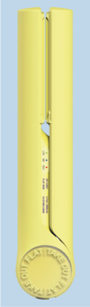
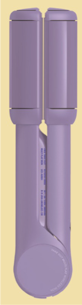
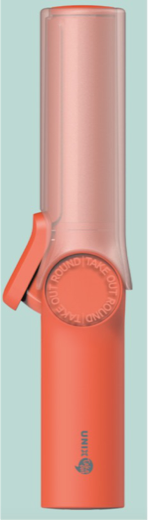
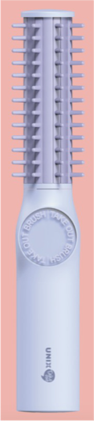
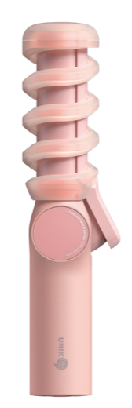
2025년 프로젝트. 한국 가전 브랜드 UNIX의 TAKEOUT 시리즈를 일본에 유통했습니다.
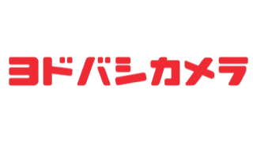
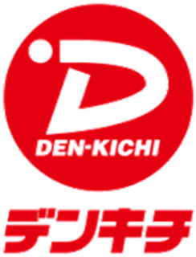
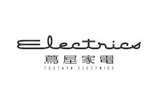
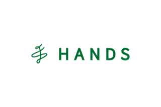
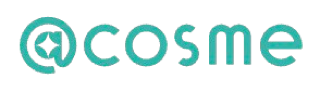
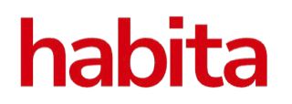
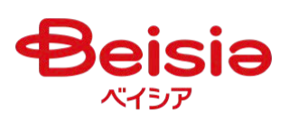
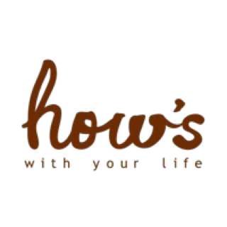
가전 대형 매장 2,000곳(요도바시카메라, 빅카메라, EDION, 야마다, 케즈덴키, 노지마, 코지마, AEON 등)과 버라이어티 스토어 1,000곳(LOFT, PLAZA, HANDS, @cosme, 돈키호테, 하비타 등)
한국 세럼 브랜드 에센시엘(ESSENCIEL)의 일본 초기 진출. 2025년 6월 대행을 시작해 8월 5일 큐텐 메가데뷔를 진행했습니다.
큐텐 운영 대행과 마케팅 기획·집행을 총괄했습니다. 매월 1,000건 이상 시딩으로 브랜드 인지도를 쌓았습니다.
일본 마케팅 방향을 '일본 SNS에 정보 쌓기'로 잡고, 기기 성능을 알리는 정보성 콘텐츠를 만들어 발행했습니다.
Wooliliwoo 브랜드의 일본 진출. 큐텐 대행과 마케팅 기획·집행을 총괄했습니다.
트위터 마케팅으로 초기 수요를 만들고, 메가와리(큐텐 대형 할인 행사)에 마케팅을 집중했습니다.
한국 스킨케어 브랜드의 큐텐 운영 대행. 2025년 6월 킥오프 이후 마케팅을 제안했습니다.
출처: 노션 'ZIGTAG 메가와리 리포트'
한국 색조 브랜드 Dinto. 일본 연휴 기간에 맞춰 판매했습니다.
NOT4U 바디미스트가 일본 LOFT에 입점하는 날에 맞춘 캠페인입니다.
2025년 5월. 일본 인플루언서 히마리와 서울 연남동 식당 부엉이산장의 홍보 협업입니다.
출처: 노션 업무 기록
2024 CJ KCON 페스티벌에서 진행했습니다.
CJ KCON 팀과의 소통, 현지 부스 설치, SNS 인플루언서 마케팅을 총괄했습니다.
원본이 대외비라 이미지와 브랜드명은 싣지 않았습니다.
출처: 노션 업무 기록
All Projects
대표 사례 밖의 프로젝트까지 모두 모았습니다. 상태와 분야로 거르거나 이름으로 찾을 수 있습니다.
APLOM 팝업스토어완료
일본 발레 라이프스타일 브랜드의 성수 팝업, 인스타그램 체험단 사례 보기
SKIM완료
성수 팝업스토어 VP존·포토존, 체험단 30명 사례 보기
10월 POPUP완료
일본 스킨케어 브랜드의 한국 팝업 출전 상담과 공간 탐색 사례 보기
히마리 × 부엉이산장완료
일본 인플루언서의 연남동 식당 홍보 사례 보기
셀올로지 CELLOLOGY완료
한국 피부과·약국 입점을 레퍼런스로 큐텐 미용기기 카테고리 1위(2024년 11월) 사례 보기
머니박스 (환전소)완료
일본인 대상 한국 여행 정보 사이트 코네스트 입점 투고. 3건 중 2건 게재, 부산 서면점은 2영업일 안에 게재
CENE 홍보 영상 촬영완료
홍보 영상 촬영용 모델 섭외와 촬영 진행 (2025년 5월)
하우뮤직 프로덕션완료
일본 진출 아티스트 지원: 일본 페스티벌 영업, 일본어 번안 가사 작업, 트위터 운영
메디힘완료
병원 마케팅
에센시엘 ESSENCIEL완료
큐텐 대행·마케팅. 런칭 2개월 만에 큐텐 탑페이지 실시간 1위, 뷰티 종합 4위 사례 보기
ZIGTAG완료
큐텐 운영 대행, 메가와리 리포트와 개선안 사례 보기
JS 에오샴푸완료
큐텐 상품 등록(단품 3종·세트 1종), 상세페이지 번역·현지화, 6개월 기본 세팅 (2025년 5~6월)
수소로 SUSORO완료
큐텐 운영
플로위 FLOWY완료
마케팅 제안, 트위터 운영과 인스타그램 시딩 세팅 (큐텐 운영은 클라이언트 자체 진행)
유닉스 TAKE OUT진행 중
돈키호테 400개 지점 유통과 인플루언서 마케팅 사례 보기
유닉스 × BLEACH완료
UNIX 미용가전을 일본 거래처(BLEACH)에 공급하기 위한 다자간 계약 구조 설계와 계약 서류 정리 (2025년 4월)
플러스에어 PLUSAIR진행 중
드라이어·환풍기 등 샘플과 제안서 준비, 돈키호테 테스트 판매(500개 예정) 자료 준비 (2025년 3~5월)
TikTok JE 샘플 소싱진행 중
일본 유통용 1차 제품 소싱
니지산지 향수진행 중
니지산지 향수의 한국 판매용 온라인 스토어 구축과 판매 운영 (2025년 3~4월)
디온의원완료
병원 마케팅
글루타치온 필름 신규 브랜드진행 중
신규 브랜드 '(가)Dr.H' 기획
조건에 맞는 프로젝트가 없습니다.
Know-how
반복되는 업무를 매뉴얼로 만들어 두었습니다.
FAQ
JOVS입니다. 오프라인 입점을 늘려 2년 만에 유통금액을 600% 키웠고, 온라인 점유율도 TOP10 밖에서 1위로 올렸습니다. 사례 보기
UNIX TAKEOUT을 돈키호테 400개 지점에 넣었습니다(초도 매입 4만 개). 패키지 번역부터 물류까지 맡았습니다. 사례 보기
ESSENCIEL은 런칭 2개월 만에 큐텐 탑페이지 실시간 1위·뷰티 종합 4위, CELLOLOGY는 미용기기 카테고리 1위, Wooliliwoo는 첫 메가와리 1,500개 완판과 뷰티 종합 14위를 기록했습니다. ZIGTAG는 메가와리 데이터를 분석해 개선안을 냈습니다. 사례 보기
Dinto 콜라보로 2일 만에 매출 4,300만 원, NOT4U는 매체만으로 조회 41만 회를 냈습니다. 한국·일본·베트남·러시아 크리에이터 38명이 있는 하이퍼즈 유니버스도 함께 운영했습니다. 사례 보기
KCON 2024 INTOU 부스(8,000명 이상 방문)와 성수 팝업스토어(APLOM, SKIM)를 운영했습니다. 사례 보기
네. 리뷰 체험단, 검색·메타광고, 인플루언서 마케팅을 합니다. MUSINSA·서울특별시 인플루언서 캠페인이 있습니다. 사례 보기
Glossary
With AGON
뷰티·미용가전 브랜드를 중심으로 대기업, 금융·공공기관, 병의원, 교육, 엔터테인먼트까지 54개 브랜드·파트너와 일했습니다.
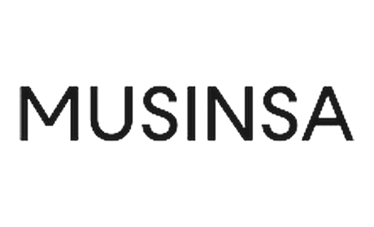
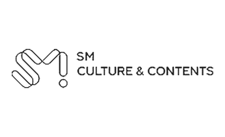